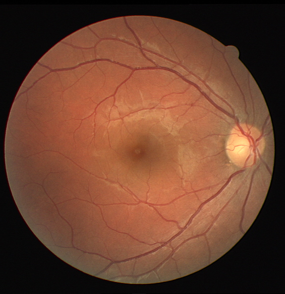
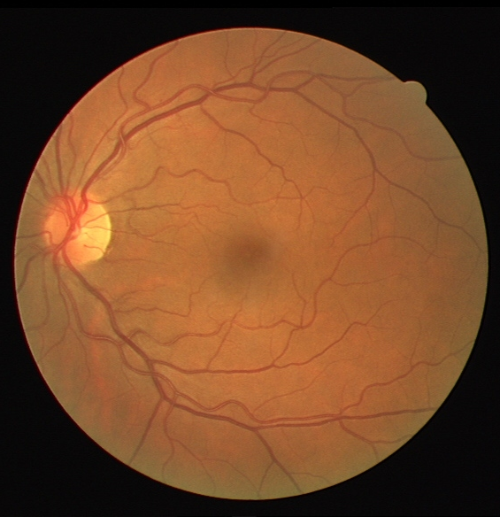
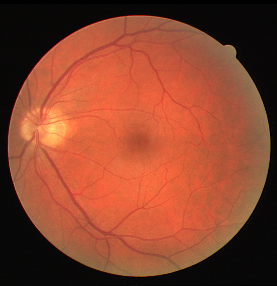
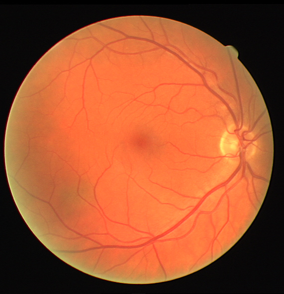
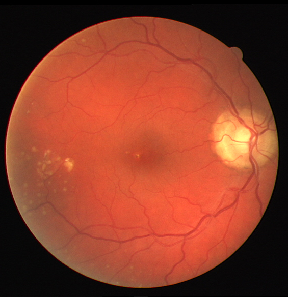
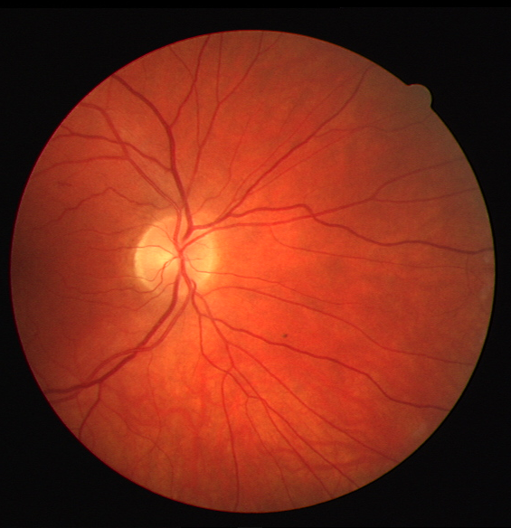
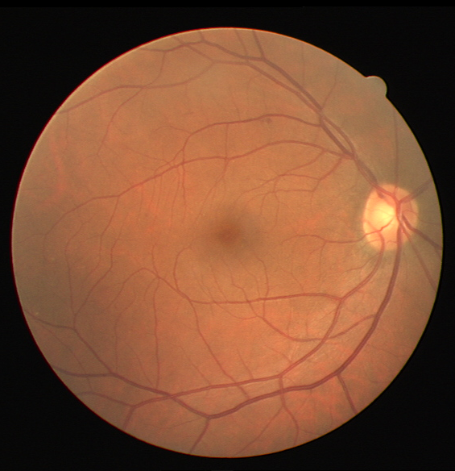
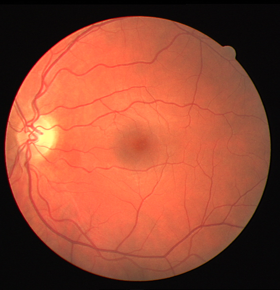

<html>
                     
  <head> 
    <meta charset="UTF-8">

    <!-- favicon settings --> 
    <link rel="apple-touch-icon" sizes="180x180" href="apple-touch-icon.png">
    <link rel="icon" type="image/png" sizes="32x32" href="favicon-32x32.png">
    <link rel="icon" type="image/png" sizes="16x16" href="favicon-16x16.png">
    <link rel="manifest" href="site.webmanifest">
    <link rel="mask-icon" href="safari-pinned-tab.svg" color="#5bbad5">
    <meta name="msapplication-TileColor" content="#da532c">
    <meta name="theme-color" content="#ffffff">
    
    <!-- zoom styles -->
    <!-- see: https://www.w3schools.com/howto/tryit.asp?filename=tryhow_js_image_zoom -->
    <meta name="viewport" content="width=device-width, initial-scale=1.0">
      <style>
      * {box-sizing: border-box;}

      .img-zoom-container {
        position: relative;
        width: 100%;
        overflow: hidden;
      }

      .img-zoom-lens {
        position: absolute;
        border: 1px solid #d4d4d4;
        /*set the size of the lens:*/
        width: 40px;
        height: 40px;
      }

      .img-zoom-result {
        border: 1px solid #d4d4d4;
        /*set the size of the result div:*/
        width: 400px;
        height: 400px;
        margin-left: 520px;
      }
    </style>
    
    <!-- jquery and survey.jquery -->
    <script src="https://cdnjs.cloudflare.com/ajax/libs/jquery/3.1.1/jquery.min.js"></script>
    <link href="https://unpkg.com/survey-jquery@1.8.41/modern.css" type="text/css" rel="stylesheet" />
    <script src="https://unpkg.com/survey-jquery@1.8.41/survey.jquery.min.js"></script>
    
    <!-- zoom script -->
    <!-- see: https://www.w3schools.com/howto/tryit.asp?filename=tryhow_js_image_zoom -->
    <script>
      let DoctorData = {
         //PHP-DOCTOR-DATA-REPLACE
      };
      let SurveyData = {
         //PHP-SURVEY-DATA-REPLACE
      };
      function imageZoom(imgID, resultID) {
        var img, lens, result, cx, cy;
        img = document.getElementById(imgID);
        result = document.getElementById(resultID);
        /*create lens:*/
        lens = document.createElement("DIV");
        lens.setAttribute("class", "img-zoom-lens");
        /*insert lens:*/
        img.parentElement.insertBefore(lens, img);
        /*calculate the ratio between result DIV and lens:*/
        cx = result.offsetWidth / lens.offsetWidth;
        cy = result.offsetHeight / lens.offsetHeight;
        /*set background properties for the result DIV:*/
        result.style.backgroundImage = "url('" + img.src + "')";
        result.style.backgroundSize = (img.width * cx) + "px " + (img.height * cy) + "px";
        /*execute a function when someone moves the cursor over the image, or the lens:*/
        lens.addEventListener("mousemove", moveLens);
        img.addEventListener("mousemove", moveLens);
        /*and also for touch screens:*/
        lens.addEventListener("touchmove", moveLens);
        img.addEventListener("touchmove", moveLens);
        function moveLens(e) {
          var pos, x, y;
          /*prevent any other actions that may occur when moving over the image:*/
          e.preventDefault();
          /*get the cursor's x and y positions:*/
          pos = getCursorPos(e);
          /*calculate the position of the lens:*/
          x = pos.x - (lens.offsetWidth / 2);
          y = pos.y - (lens.offsetHeight / 2);
          /*prevent the lens from being positioned outside the image:*/
          if (x > img.width - lens.offsetWidth) {x = img.width - lens.offsetWidth;}
          if (x < 0) {x = 0;}
          if (y > img.height - lens.offsetHeight) {y = img.height - lens.offsetHeight;}
          if (y < 0) {y = 0;}
          /*set the position of the lens:*/
          lens.style.left = x + "px";
          lens.style.top = y + "px";
          /*display what the lens "sees":*/
          result.style.backgroundPosition = "-" + (x * cx) + "px -" + (y * cy) + "px";
        }
        function getCursorPos(e) {
          var a, x = 0, y = 0;
          e = e || window.event;
          /*get the x and y positions of the image:*/
          a = img.getBoundingClientRect();
          /*calculate the cursor's x and y coordinates, relative to the image:*/
          x = e.pageX - a.left;
          y = e.pageY - a.top;
          /*consider any page scrolling:*/
          x = x - window.pageXOffset;
          y = y - window.pageYOffset;
          return {x : x, y : y};
        }
      }
     </script>
  </head>

                    
<body>
    <div id="surveyContainer"></div>    
    <script>
        Survey.StylesManager.applyTheme("modern");
        var surveyJSON = { pages: [{name: "page-28",elements: [{type: "html",name: "s3-q28-img",html: "<div class='img-zoom-container'><div style='width: 500px; float: left'></div><div id='000001-zoom' class='img-zoom-result'></div></div>"},{type: "radiogroup",name: "s3-q28-choice",isRequired: true,state: "expanded",title: "Please choose the option you agree with the most about the displayed fundus image.",requiredErrorText: "Please answer the question.",choices: [{value: "background_diabetic_retinopathy",text: "This image displays the signs of background background diabetic retinopathy."},{value: "none",text: "I believe that this image does not show any of the listed conditions."}, {value: "not_applicable",text: "The image is not good enough for assessing the diagnosis."}]},{type: "rating",name: "s3-q28-certainty",state: "expanded",title: "How certain are you in your response?",requiredErrorText: "Please answer the question.",isRequired: true,rateMin: 1,rateMax: 5,minRateDescription: "Uncertain",maxRateDescription: "Certain"}],title: "Question 28",description: ""},{name: "page-19",elements: [{type: "html",name: "s3-q19-img",html: "<div class='img-zoom-container'><div style='width: 500px; float: left'></div><div id='004036-zoom' class='img-zoom-result'></div></div>"},{type: "radiogroup",name: "s3-q19-choice",isRequired: true,state: "expanded",title: "Please choose the option you agree with the most about the displayed fundus image.",requiredErrorText: "Please answer the question.",choices: [{value: "background_diabetic_retinopathy",text: "This image displays the signs of background background diabetic retinopathy."},{value: "none",text: "I believe that this image does not show any of the listed conditions."}, {value: "not_applicable",text: "The image is not good enough for assessing the diagnosis."}]},{type: "rating",name: "s3-q19-certainty",state: "expanded",title: "How certain are you in your response?",requiredErrorText: "Please answer the question.",isRequired: true,rateMin: 1,rateMax: 5,minRateDescription: "Uncertain",maxRateDescription: "Certain"}],title: "Question 19",description: ""},{name: "page-26",elements: [{type: "html",name: "s3-q26-img",html: "<div class='img-zoom-container'><div style='width: 500px; float: left'></div><div id='004776-zoom' class='img-zoom-result'></div></div>"},{type: "radiogroup",name: "s3-q26-choice",isRequired: true,state: "expanded",title: "Please choose the option you agree with the most about the displayed fundus image.",requiredErrorText: "Please answer the question.",choices: [{value: "background_diabetic_retinopathy",text: "This image displays the signs of background background diabetic retinopathy."},{value: "none",text: "I believe that this image does not show any of the listed conditions."}, {value: "not_applicable",text: "The image is not good enough for assessing the diagnosis."}]},{type: "rating",name: "s3-q26-certainty",state: "expanded",title: "How certain are you in your response?",requiredErrorText: "Please answer the question.",isRequired: true,rateMin: 1,rateMax: 5,minRateDescription: "Uncertain",maxRateDescription: "Certain"}],title: "Question 26",description: ""},{name: "page-15",elements: [{type: "html",name: "s3-q15-img",html: "<div class='img-zoom-container'><div style='width: 500px; float: left'></div><div id='002367-zoom' class='img-zoom-result'></div></div>"},{type: "radiogroup",name: "s3-q15-choice",isRequired: true,state: "expanded",title: "Please choose the option you agree with the most about the displayed fundus image.",requiredErrorText: "Please answer the question.",choices: [{value: "background_diabetic_retinopathy",text: "This image displays the signs of background background diabetic retinopathy."},{value: "none",text: "I believe that this image does not show any of the listed conditions."}, {value: "not_applicable",text: "The image is not good enough for assessing the diagnosis."}]},{type: "rating",name: "s3-q15-certainty",state: "expanded",title: "How certain are you in your response?",requiredErrorText: "Please answer the question.",isRequired: true,rateMin: 1,rateMax: 5,minRateDescription: "Uncertain",maxRateDescription: "Certain"}],title: "Question 15",description: ""},{name: "page-21",elements: [{type: "html",name: "s3-q21-img",html: "<div class='img-zoom-container'><div style='width: 500px; float: left'></div><div id='002764-zoom' class='img-zoom-result'></div></div>"},{type: "radiogroup",name: "s3-q21-choice",isRequired: true,state: "expanded",title: "Please choose the option you agree with the most about the displayed fundus image.",requiredErrorText: "Please answer the question.",choices: [{value: "background_diabetic_retinopathy",text: "This image displays the signs of background background diabetic retinopathy."},{value: "none",text: "I believe that this image does not show any of the listed conditions."}, {value: "not_applicable",text: "The image is not good enough for assessing the diagnosis."}]},{type: "rating",name: "s3-q21-certainty",state: "expanded",title: "How certain are you in your response?",requiredErrorText: "Please answer the question.",isRequired: true,rateMin: 1,rateMax: 5,minRateDescription: "Uncertain",maxRateDescription: "Certain"}],title: "Question 21",description: ""},{name: "page-29",elements: [{type: "html",name: "s3-q29-img",html: "<div class='img-zoom-container'><div style='width: 500px; float: left'></div><div id='003654-zoom' class='img-zoom-result'></div></div>"},{type: "radiogroup",name: "s3-q29-choice",isRequired: true,state: "expanded",title: "Please choose the option you agree with the most about the displayed fundus image.",requiredErrorText: "Please answer the question.",choices: [{value: "background_diabetic_retinopathy",text: "This image displays the signs of background background diabetic retinopathy."},{value: "none",text: "I believe that this image does not show any of the listed conditions."}, {value: "not_applicable",text: "The image is not good enough for assessing the diagnosis."}]},{type: "rating",name: "s3-q29-certainty",state: "expanded",title: "How certain are you in your response?",requiredErrorText: "Please answer the question.",isRequired: true,rateMin: 1,rateMax: 5,minRateDescription: "Uncertain",maxRateDescription: "Certain"}],title: "Question 29",description: ""},{name: "page-23",elements: [{type: "html",name: "s3-q23-img",html: "<div class='img-zoom-container'><div style='width: 500px; float: left'></div><div id='005118-zoom' class='img-zoom-result'></div></div>"},{type: "radiogroup",name: "s3-q23-choice",isRequired: true,state: "expanded",title: "Please choose the option you agree with the most about the displayed fundus image.",requiredErrorText: "Please answer the question.",choices: [{value: "background_diabetic_retinopathy",text: "This image displays the signs of background background diabetic retinopathy."},{value: "none",text: "I believe that this image does not show any of the listed conditions."}, {value: "not_applicable",text: "The image is not good enough for assessing the diagnosis."}]},{type: "rating",name: "s3-q23-certainty",state: "expanded",title: "How certain are you in your response?",requiredErrorText: "Please answer the question.",isRequired: true,rateMin: 1,rateMax: 5,minRateDescription: "Uncertain",maxRateDescription: "Certain"}],title: "Question 23",description: ""},{name: "page-33",elements: [{type: "html",name: "s3-q33-img",html: "<div class='img-zoom-container'><div style='width: 500px; float: left'></div><div id='004111-zoom' class='img-zoom-result'></div></div>"},{type: "radiogroup",name: "s3-q33-choice",isRequired: true,state: "expanded",title: "Please choose the option you agree with the most about the displayed fundus image.",requiredErrorText: "Please answer the question.",choices: [{value: "background_diabetic_retinopathy",text: "This image displays the signs of background background diabetic retinopathy."},{value: "none",text: "I believe that this image does not show any of the listed conditions."}, {value: "not_applicable",text: "The image is not good enough for assessing the diagnosis."}]},{type: "rating",name: "s3-q33-certainty",state: "expanded",title: "How certain are you in your response?",requiredErrorText: "Please answer the question.",isRequired: true,rateMin: 1,rateMax: 5,minRateDescription: "Uncertain",maxRateDescription: "Certain"}],title: "Question 33",description: ""}],surveyID: 3,questionErrorLocation: "bottom",showProgressBar: "top",progressBarType: "pages",goNextPageAutomatic: false,completedHtml: "Thank you for completing the questionnaire!<br>"}
        // Function to download survey results to a file
      
        function downloadSurveyData(data, filename = 'survey-results.json') {
            let jsonData = JSON.stringify(data, null, 2); // Pretty print JSON data
            let blob = new Blob([jsonData], { type: "application/json" });
              
            // Create a link element to trigger the download
            let link = document.createElement('a');
            link.href = URL.createObjectURL(blob);
            link.download = filename;
              
            // Programmatically click the link to trigger the download
            document.body.appendChild(link);
            link.click();
              
            // Clean up
            document.body.removeChild(link);
        }
          
        // Replace the original sendDataToServer function with this
        function sendDataToDisk(sender) {
            // Serialize the survey data
            let surveyData = sender.data;
            let formattedData = {
                "ResultCount": 1,
                "HappenedAt": Date.now(),
                "Data": [
                    surveyData
                ]
            };
    
            surveyFilename = window.location.pathname
            surveyFilename = surveyFilename.substring(surveyFilename.lastIndexOf('/') + 1)
            let responseFilename = 'responses-' + surveyFilename
    
            // Trigger file download with the survey data
            downloadSurveyData(formattedData, responseFilename);
        }
                        
        // Initialize the survey and replace the onComplete handler
        var survey = new Survey.Model(surveyJSON);
                        
        survey.locale = "en"
        
        $("#surveyContainer").Survey({
            model: survey,
            onComplete: sendDataToDisk // Replace the server submission with local saving
        });
    </script>
</body>

</html>
                